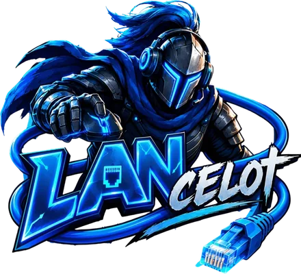
Hecho por un profesor, para el aula
Todo para tu clase, en tu propia red
LANcelot funciona en el PC de tu aula. Los alumnos escanean el código QR de la pizarra y juegan en su Chromebook, tableta o móvil. Sin cuentas de alumnos, sin límite de alumnos ni de preguntas.
Próximamente · PC con Windows · Los alumnos juegan en el navegador
Todo en uno
Cuestionarios, encuestas, juegos, fichas, exámenes y herramientas de aula en una sola app.
Local
El juego va por la red del colegio. Rápido, incluso con 30 dispositivos a la vez.
Privado
Los nombres y los resultados se quedan en el PC de tu aula.
Mira LANcelot en acción
Así funciona
Abre LANcelot
Doble clic en el PC del aula. La pantalla del profesor se abre en la pizarra.
Los alumnos escanean
Escanean el código QR o escriben la dirección. Ponen su nombre y listo.
Jugar y aprender
Tú eliges el cuestionario y el juego. La clase juega y tú lo sigues todo en directo.
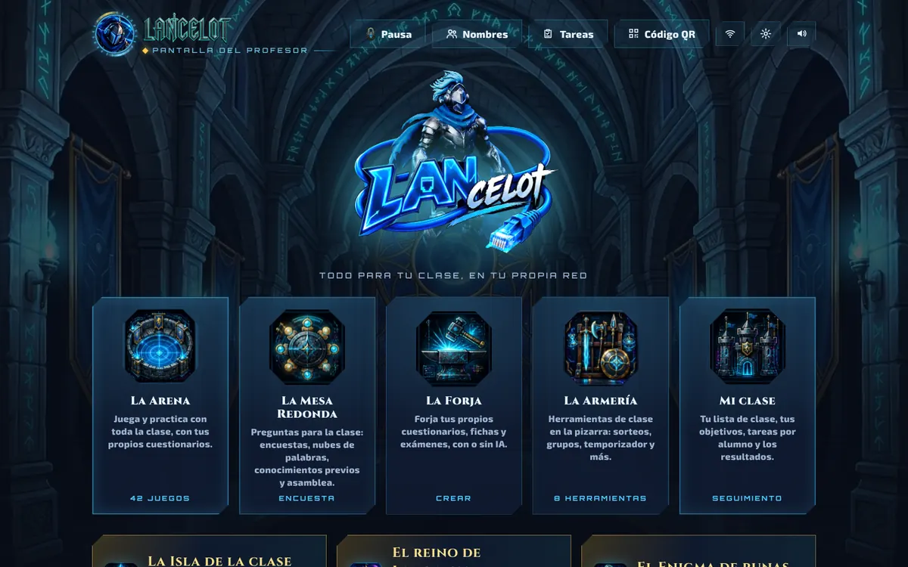
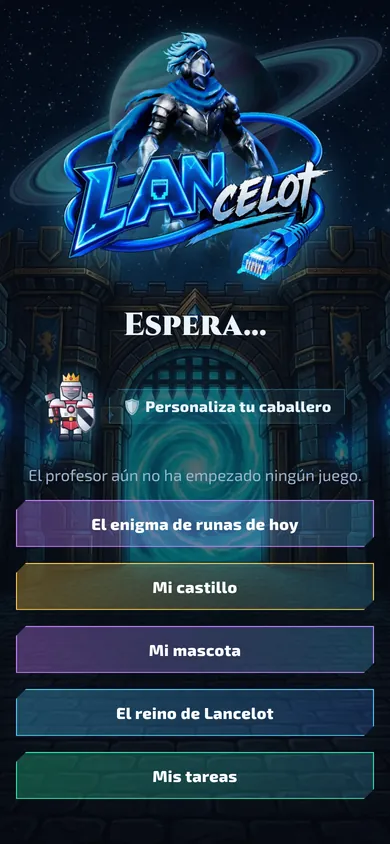
Cinco salas, una sola forma de trabajar
Cada parte tiene un icono y una frase de explicación. Si conoces una sala, las conoces todas.
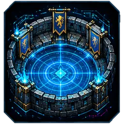
La Arena
Practicar jugando con tus propios cuestionarios: cuestionarios rápidos, duelos, juegos en equipo y aventuras.
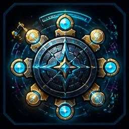
La Mesa Redonda
Pregunta a toda la clase: encuestas, afirmaciones, nubes de palabras, preguntas abiertas y asambleas.
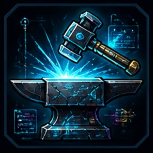
La Forja
Crea cuestionarios, fichas y exámenes, con IA o tú mismo. En directo o en papel con solucionario.
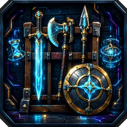
La Armería
Herramientas de aula en la pizarra: sorteo, grupos, temporizador, medidor de ruido, dados y tareas de clase.
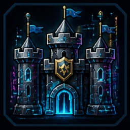
Mi clase
Tu lista de clase, los objetivos curriculares de tu país o los tuyos, tareas por alumno y los resultados.
40+ juegos para tus propios contenidos
Cada juego funciona con cada cuestionario. Las respuestas correctas dan combustible, munición, energía o un poder. Quien acierta llega más lejos.
Cuestionario y duelo
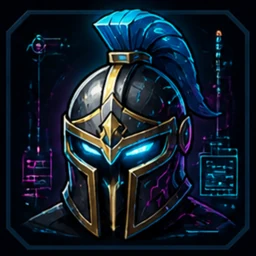
TorneoCuestionario rápido: ¿quién responde más rápido y mejor?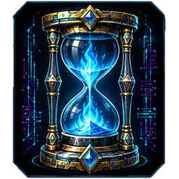
CalentamientoEmpieza tu clase con unas preguntas de repaso de clases anteriores. LANcelot elige lo que hace mucho que se vio o lo que a menudo salió mal.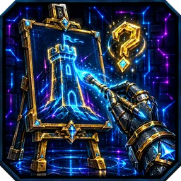
El Pintor de la corteUn caballero dibuja un concepto de la clase con tinta de neón y los demás lo adivinan en su propio dispositivo. Rápido y correcto = más puntos, también para quien dibuja.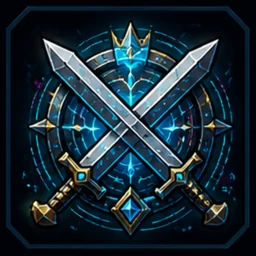
Duelo en la arenaUno contra uno: quien responde bien primero golpea. Un cuadro de torneo hasta que queda un campeón.
Jugar juntos
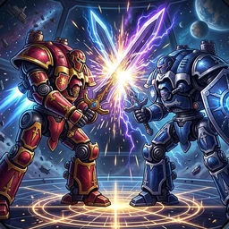
Choque de titanesCada equipo controla un titán gigante. Cada alumno es una parte: espada, escudo, núcleo, cañón o piernas. Las respuestas correctas cargan tu parte. ¡Todas las partes aciertan juntas = Golpe del titán!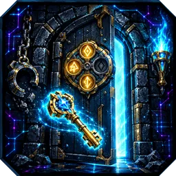
Escapa de la mazmorraToda la clase está encerrada. Forjad juntos llaves, descifrad códigos de runas y derrotad al Amo de la mazmorra: puerta tras puerta hasta la salida.- Constructores del castilloConstruid juntos un castillo: cada respuesta correcta es una piedra. ¿Aguantará cuando ataque el dragón?
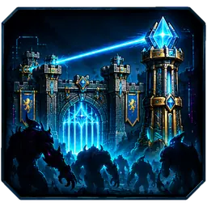
Guardián de la puertaDefended juntos la puerta del castillo. Las respuestas correctas dan oro para tu propia torre. Al final llega el dragón.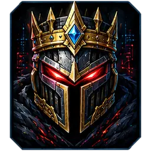
Jefe profeEres el jefe final: un caballero gigante en la pizarra. La clase ataca con respuestas correctas y tú contraatacas.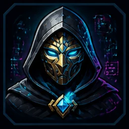
El traidorRestaurad juntos el núcleo, pero ¿quién es el traidor? Votad en la Mesa Redonda. El reinoConquistad territorios en equipos, clase tras clase. La materia anterior vuelve para defender tu tierra.
El reinoConquistad territorios en equipos, clase tras clase. La materia anterior vuelve para defender tu tierra.
Carreras y aventura
 Neon-CamelotUna gran ciudad de caballeros abierta: toda la clase corre a la vez en hoverkarts que derrapan y saltan. Perseguir ladrones, carreras, apagar incendios. Cada misión empieza con una pregunta.
Neon-CamelotUna gran ciudad de caballeros abierta: toda la clase corre a la vez en hoverkarts que derrapan y saltan. Perseguir ladrones, carreras, apagar incendios. Cada misión empieza con una pregunta. Carrera de caballerosCarrera en corceles flotantes en 3D. Las respuestas correctas llenan tu depósito y dan turbo.
Carrera de caballerosCarrera en corceles flotantes en 3D. Las respuestas correctas llenan tu depósito y dan turbo.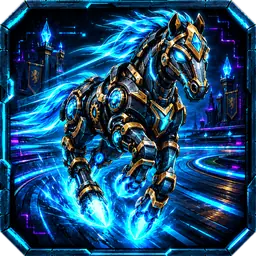
RobocaballosConstruye tu propio caballo robot y corre alrededor del lago del castillo, con rampas, nitro y caminos secretos. Los cofres de runa dan una pregunta: correcta = un arma.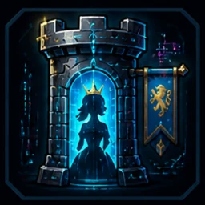
La princesa en la torreSalta hasta arriba y rescata a la princesa. Las respuestas correctas dan energía.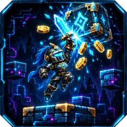
Caballero píxelCorre y salta con tu propio caballero por mundos de píxel retro. Los bloques de runa dan una pregunta: correcta = potenciador. ¿Quién llega a más puertas de runa?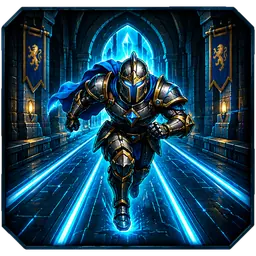
Vuelo neónCorre, salta y deslízate por el castillo de neón. En una puerta de pregunta corres por la respuesta correcta para conseguir turbo y un × más alto. Caballero coheteHaz volar a tu caballero cohete de bandera en bandera sobre lava, pinchos y láseres. Cada bandera es una pregunta: correcta = turbo. ¿Quién es el más rápido?
Caballero coheteHaz volar a tu caballero cohete de bandera en bandera sobre lava, pinchos y láseres. Cada bandera es una pregunta: correcta = turbo. ¿Quién es el más rápido? PartespadasToca y tu espada luminosa da una voltereta. Parte cristales, barriles y robots y clávate en la madera. Cada poste de runa es una pregunta: correcta = hoja dorada.
PartespadasToca y tu espada luminosa da una voltereta. Parte cristales, barriles y robots y clávate en la madera. Cada poste de runa es una pregunta: correcta = hoja dorada. Carro tambaleanteConduce tu carro de caballero por rampas, puentes que se tambalean y balancines. Cada bandera, una pregunta y un carro distinto: ruedas de hielo, ruedas cuadradas…
Carro tambaleanteConduce tu carro de caballero por rampas, puentes que se tambalean y balancines. Cada bandera, una pregunta y un carro distinto: ruedas de hielo, ruedas cuadradas…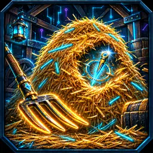
Caza en el pajarExcava en tu pajar de neón hasta encontrar la aguja de cristal. Respuesta correcta = mejor herramienta y la brújula te indica el camino.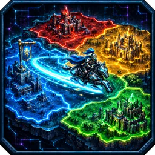
Campo de estandartesTraza una estela de luz con tu corcel flotante y cierra un bucle: toda la tierra de dentro pasa a tu color. Sin energía = pregunta, correcta = turbo.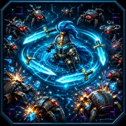
Guardia del enjambreMantén a tu caballero de una pieza contra enjambres de robots oxidados. Tus armas disparan solas. Barra llena = una pregunta: correcta = eliges tú tu mejora.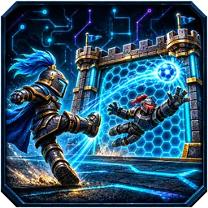
Puerta de plasmaTanda de penaltis contra 8 caballeros robot: apunta con tu balón de plasma y tírate como portero. Cada lanzamiento, una pregunta: correcta = balón dorado y escudo grande.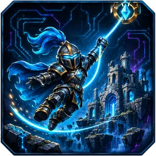
Caballero ganchoBalancéate con tu gancho de plasma de ancla de cristal en ancla de cristal: mantener = agarrar, soltar = volar. Cada bandera, una pregunta: correcta = gancho dorado.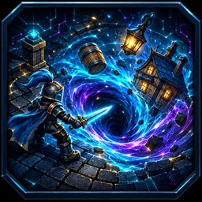
Caballero vórticeDirige tu vórtice de plasma por la ciudad de los caballeros y trágate todo lo más pequeño: monedas, carros, casas, torres. Cuanto más tragas, más grande te haces. Cada respuesta correcta = crecer + succión.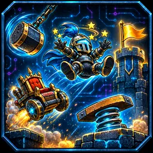
Caballero volteretaCircuito de acrobacias con un caballero en una máquina rara: trampolines, martillos, láseres y cañones. Cada bandera, una pregunta: correcta = turbo.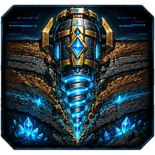
Taladro profundoPerfora lo más hondo que puedas en busca de oro, cristal y núcleos de neón. Las respuestas correctas dan combustible y la forja hace tu taladro más fuerte.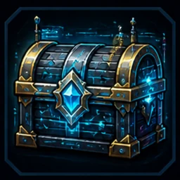
Caza del tesoroReúne oro con respuestas correctas y compra mejoras con cabeza.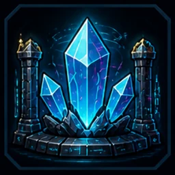
Robo de cristalesExtrae cristales con respuestas correctas y fuerza la cámara de otro con la palabra secreta.
Combate en la arena
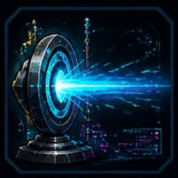
Batalla láserBatalla láser rojo contra azul. Ganas munición con respuestas correctas. Cada alumno elige su vista: desde arriba, detrás del caballero o en primera persona.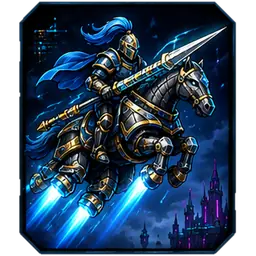
Corceles de guerraCorceles flotantes en una arena de batalla. Solo consigues láseres, cohetes y minas con respuestas correctas.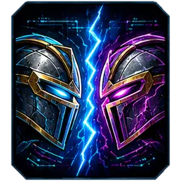
Duelo neónJuego de lucha con toda la clase: dos equipos, dos caballeros en la pizarra. Correcto = golpe, rápido = combo, tres seguidas = supergolpe.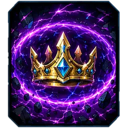
Caballero RoyaleTodos en una arena y la tormenta de neón se encoge. Ganas munición con respuestas correctas. Gana el último caballero.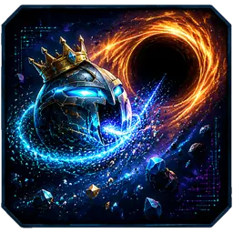
DevoraestrellasCome polvo de estrellas y caballeros más pequeños, evita el agujero negro. Las respuestas correctas dan masa, turbo y supernova.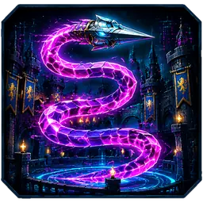
Serpiente caballeroUna serpiente lanza de neón que crece con respuestas correctas. Corta a los demás y cómete su luz.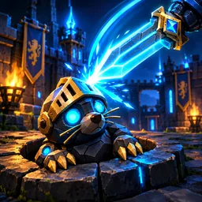
RobotopoSalen topos robot de los pozos del castillo: golpéalos con tu espada. Las respuestas correctas cargan tu espada y dan la Espada de fuego.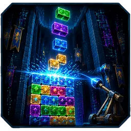
Asalto al castilloBloques de neón que caen: llena filas y bombardea los castillos de tus compañeros. Las respuestas correctas dan un escudo de runa y ataques dobles.
Material de clase en segundos, con IA
Indica un tema y el curso, o añade una foto de tu libro. La IA crea un cuestionario, una ficha o una serie completa por lección, en tres niveles.
- Funciona con Gemini, ChatGPT o Claude: LANcelot copia la instrucción y tú pegas la respuesta.
- O introduce tu propia clave y todo se hace con un clic.
- Las fichas se juegan en directo en clase o se imprimen con solucionario.
- Solo crear con IA necesita internet. El juego va por la red del aula.
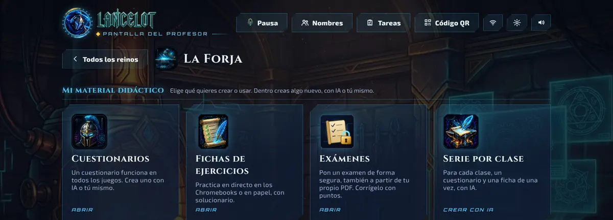
Cada alumno a su nivel
Por asignatura eliges un nivel para cada alumno. Los cuestionarios, fichas y tareas se adaptan.
Paje
Más apoyo y preguntas más sencillas
Escudero
El contenido habitual
Caballero
Un reto para quien puede ir más allá
Seguimiento, apoyo e informes
Cada respuesta va al registro, vinculada a los objetivos que elijas. Ves enseguida quién necesita ayuda extra.
Resumen de apoyo
Quien más atención necesita aparece arriba. Ves qué objetivos debe repasar toda la clase, quién necesita la mesa de instrucción y qué errores se repiten.
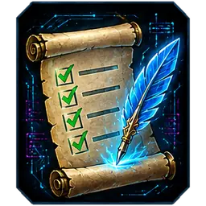
Tareas por alumno
Asigna un cuestionario o una ficha a un alumno o a un grupo pequeño, cada uno a su nivel. También desde casa.
Objetivos de tu país
Elige los objetivos de Inglaterra, EE. UU., Países Bajos, Alemania, Francia o Flandes, o añade los tuyos. Una IA puede proponerlos. También puedes trabajar sin objetivos.
Exámenes con hoja de corrección
Crea un examen en la Forja, hazlo en línea o imprímelo. Las notas llegan solas a tu resumen.
Por qué los alumnos lo esperan cada día
Su propio caballero
Casco, armadura, arma y escudo a su gusto. El caballero juega en cada juego.
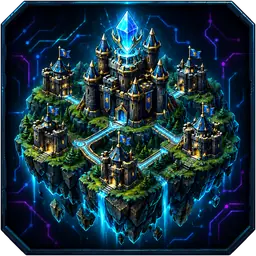
La Isla de la clase
Con el Honor ganado por esfuerzo y progreso, cada alumno construye su castillo. Sin clasificación.
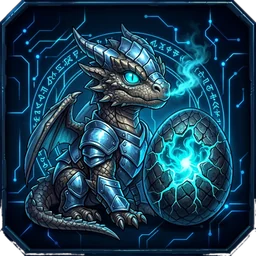
Mi mascota
Un huevo que se abre y crece. No hay castigos.
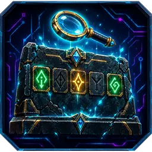
El Enigma de runas
Cada día una palabra secreta que descifrar, en tres niveles.
Los datos de los alumnos se quedan en tu aula
- LANcelot funciona en tu propio PC. Sin nube y sin cuentas de alumnos.
- Los nombres, respuestas y resultados están en una carpeta de ese PC. Tú decides qué pasa con ellos.
- Sin anuncios y sin rastreo.
- Si usas IA, solo tu instrucción (tema o material de clase) va a la IA que elijas. Ningún nombre de alumno.
Funciona con lo que tu clase ya tiene
- Pizarra digital o pantallaLa pantalla del profesor y el juego
- Chromebooks y portátilesSimplemente en el navegador
- Tabletas y móvilesEscanea el código QR y juega
En cinco idiomas
Neerlandés, inglés, francés, español y alemán. Elige el idioma en los ajustes y cambia cada pantalla, también la de los alumnos.
Lleva LANcelot a tu aula
LANcelot llegará pronto a Microsoft Store. Durante el primer mes lo pruebas todo completo.
Próximamente
Solo necesitas un PC con Windows en el aula. Los alumnos juegan desde el navegador.
¿Preguntas o interés? Escribe a hello@lancelot.network
Preguntas frecuentes
¿Cuándo podré usar LANcelot?
LANcelot llegará pronto a Microsoft Store, con un mes de prueba en el que todo funciona. En esta web te enterarás primero.
¿Funciona LANcelot con los objetivos de mi país?
Sí. En Mi clase eliges los objetivos curriculares de tu país, añades los tuyos o trabajas sin objetivos. Cada respuesta queda bajo el objetivo correcto en tu resumen. Para España, de momento usa tus propios objetivos o la IA.
¿Necesito internet?
El juego va por la red local del colegio: el PC y los dispositivos de los alumnos deben estar en la misma red. Solo crear material con IA necesita internet.
¿Los alumnos necesitan una cuenta?
No. Escriben su nombre y juegan. LANcelot recuerda su caballero y sus resultados en el PC del aula.
¿Cuántos alumnos pueden jugar?
No hay límite. Una clase de treinta juega con fluidez, con Chromebooks, tabletas y móviles mezclados.
¿Qué necesito?
Un PC con Windows (normalmente el de la pizarra), la red del colegio y dispositivos con navegador para los alumnos.
¿Puedo usar mis propios contenidos?
Claro. Crea cuestionarios tú mismo, deja que la IA los haga a partir de tu libro o de un PDF, y ordénalo todo en carpetas por asignatura y lección.